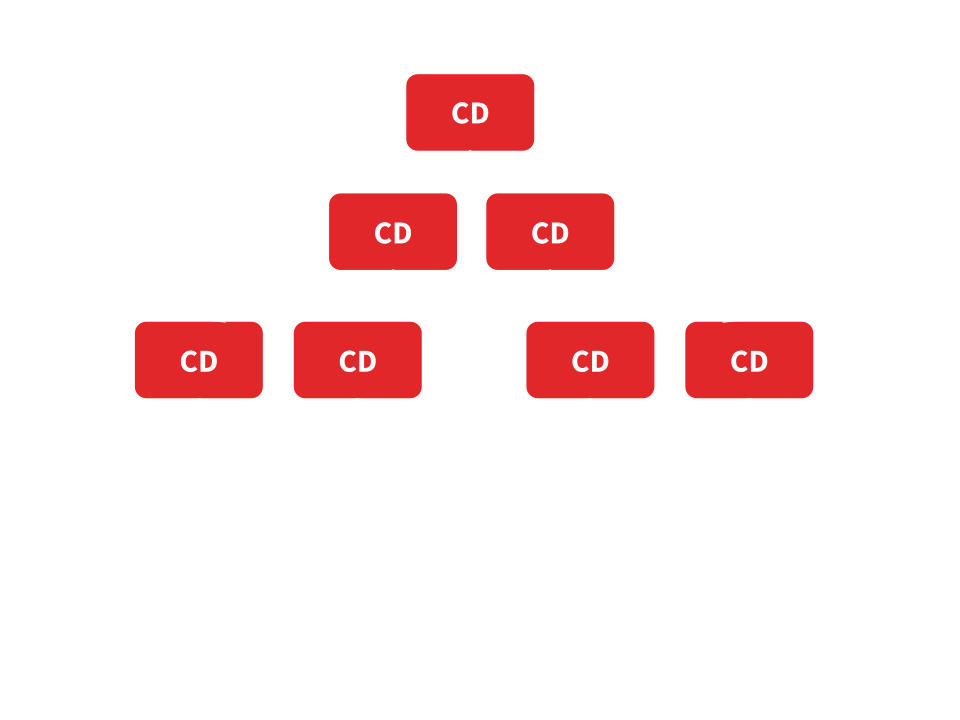

We need to update DOM when data model has changed
Zones give us additional context where our code is executed and zones can perform some operation when task is started or finished
function doSomething() {
console.log('Async task');
}
function main() {
foo();
setTimeout(doSomething, 2000);
bar();
}
var myZoneSpec = {
beforeTask: function () {
console.log('Before task');
},
afterTask: function () {
console.log('After task');
}
};
var myZone = zone.fork(myZoneSpec);
myZone.run(main);
// Before task
// After task
// Before task
// Async task
// After taskSo, in Angular we have something like
this.zone.onMicrotaskEmpty
.subscribe(() => {
this.zone.run(() => this.tick() })
});
tick() {
this.changeDetectorsRefs
.forEach((ref) => ref.detectChanges());
}
class Movie_ChangeDetector {
// ...
detectChanges () {
// ...
var movie = obj.movie;
var rating = moview.rating;
if (rating !== this.previousRating) {
this.previousRating = rating;
this.movieRatingComponent.rating = rating;
}
}
}Each component has its own Change Detector
When event is fired
Change detection process is started. From root to leafs.
Change detection process is started. From root to leafs.
Change detection process is started. From root to leafs.
Change detection process is started. From root to leafs.
Optimization - check only this subtree which was changed
Run change detection in component only when some input referance will change
import { Component, Input, ChangeDetectionStrategy } from '@angular/core';
@Component({
selector: 'some-component',
template: '{{someValue.param}}',
changeDetection: ChangeDetectionStrategy.OnPush
})
export class SomeComponent {
@Input() someValue: SomeObject;
}Optimization - check only this path which was changed
Mark component to check by markForCheck method from ChangeDetectorRef
import { Component, Input, ChangeDetectionStrategy, ChangeDetectorRef, OnInit } from '@angular/core';
import { Observable } from 'rxjs/Observable';
@Component({
selector: 'some-component',
template: '{{someValue.param}}',
changeDetection: ChangeDetectionStrategy.OnPush
})
export class SomeComponent implements OnInit{
@Input() someStream: Observable<any>;
constructor (private cd: ChangeDetectorRef) {}
ngOnInit () {
this.someStream.subscribe(() => {
// ... do something
this.cd.markForCheck();
});
}
}Action can come from stream from either input or a shared service
import { Component, Input, ChangeDetectionStrategy, ChangeDetectorRef, OnInit } from '@angular/core';
import { Observable } from 'rxjs/Observable';
import { Shared } from './../core/shared.service';
@Component({
selector: 'some-component',
template: '{{someValue.param}}',
changeDetection: ChangeDetectionStrategy.OnPush
})
export class SomeComponent implements OnInit{
constructor (private cd: ChangeDetectorRef, private sharedService: SharedService) {}
ngOnInit () {
this.sharedService.getStream().subscribe(() => {
// ... do something
this.cd.markForCheck();
});
}
}import { Component, Input, ChangeDetectionStrategy, ChangeDetectorRef, OnInit } from '@angular/core';
import { Observable } from 'rxjs/Observable';
@Component({
selector: 'some-component',
template: '{{someValue.param}}',
changeDetection: ChangeDetectionStrategy.OnPush
})
export class SomeComponent implements OnInit{
@Input() someStream: Observable<any>;
constructor (private cd: ChangeDetectorRef) {}
ngOnInit () {
this.cd.detach();
this.someStream.subscribe(
() => { /* do something with data */ },
() => { /* do something with error */ },
() => {
// when complete
this.cd.reattach();
},
);
}
}